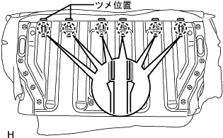
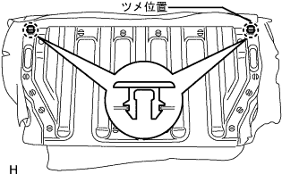
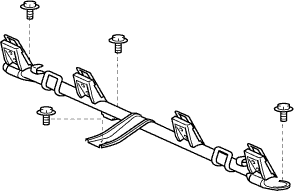

リヤシートASSY(一体可倒式) 分解 |
| 1. リヤシート クッション カバー ＆ パッド取りはずし |
ホグリングをはずし、リヤシートクッションカバー & パッドを取りはずす。
| 2. リヤシートクッションアンダ クロス取りはずし |
リヤシートクッションアンダクロスを取りはずす。
| 3. リヤシート ヘッドレストASSY取りはずし |
リヤシートバツクASSYよりリヤシートヘッドレストASSYを2個を取りはずす。
| 4. リヤシート ヘッドレストASSY CTR取りはずし |
リヤシートバツクASSYよりリヤシートヘッドレストASSY CTRを取りはずす。
| 5. リヤシートバックストップレリーズ ボタン取りはずし |
反時計方向に回し、リヤシートバツクストップレリーズボタン2個を取りはずす。
| 6. リヤシートヘッドレスト サポート取りはずし |
 |
クリップリムーバーを使用して、クリップ7個を取りはずす。
リヤシートバツクカバーをめくり、ホグリングを取りはずす。
|  |
ツメのかん合をはずし、リヤシートヘッドレストサポートASSYを取りはずす。
| 7. リヤシートバックストップボタン グロメット取りはずし |
|  |
ツメのかん合をはずし、リヤシートバツクストップボタングロメットを取りはずす。
| 8. リヤシートバック パッドSUB-ASSY(カバー ツキ)取りはずし |
リヤシートバツクカバー & パッドを取りはずす。
| 9. リヤシートバツク アンダ クロース取りはずし |
リヤシートバツクアンダクロスを取りはずす。
| 10. リヤシートバック ロックASSY RH取りはずし |
 |
ボルト2本をはずし、リヤシートバツクロックRHを取りはずす。
| 11. リヤシートバック ロックASSY LH取りはずし |
ボルト2本をはずし、リヤシートバツクロックLHを取りはずす。
| 12. リヤシートバック ヒンジSUB-ASSY RH取りはずし |
 |
ボルトをはずし、リヤシート バツク ヒンジ RHを取りはずす。
| 13. リヤシートバック ヒンジSUB-ASSY LH取りはずし |
ボルトをはずし、リヤシート バツク ヒンジ LHを取りはずす。
| 14. チャイルドレストレイント シート アンカ ブラケット RH取りはずし |
フロアカーペットを取りはずす。
|  |
ボルト4本をはずし、チャイルドレストレイント シート アンカ ブラケット RHを取りはずす。